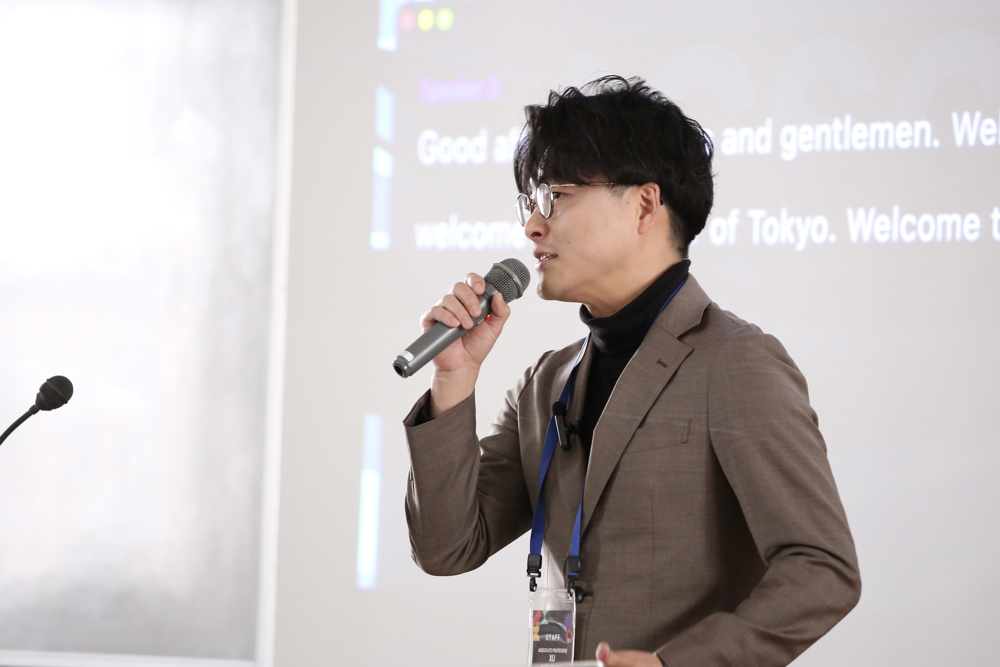

一橋大学 商学部・大学院経営管理研究科 徐文臻研究室（Xu's Lab / Data & AI-Driven Marketing Lab）は、社会心理学、ヒューマン・コンピュータ・インタラクション（HCI）、計算社会科学を架橋し、デジタル社会における人間の「主体感（Sense of Agency）」の維持と自律的意思決定を支援する革新的マーケティング科学を追求します。 At the Data & AI-Driven Marketing Lab (Xu's Lab), Hitotsubashi University, we bridge social psychology, human-computer interaction (HCI), and computational social science to empower human autonomy and decision-making in an algorithm-driven world. 一桥大学商学部・大学院经营管理研究科 徐文臻研究室（Xu's Lab / 数据与AI驱动型营销科学实验室）深度融通社会心理学、人机交互（HCI）与计算社会科学，探索在算法协同时代维系人类自主性、行动主体感（Sense of Agency）与科学决策的前沿路径。
当研究室の学術イベント登壇、特別講演、産学官連携の最新情報です。 Latest updates on keynote lectures, panel sessions, and collaborative events. 本研究室特邀学术演讲、峰会论坛登台及前沿学术交流的最新动态。
文理融合の手法により、アルゴリズムと人間が共生する時代の意思決定メカニズムを解明します。 Bridging quantitative science and behavioral theory to decode human-AI symbiosis. 采用文理交叉范式，解析人工智能与人类社会共生时期的决策认知机理。
行動主体感（Sense of Agency）の数理モデル化、随時適応型介入（JITAI）、悪質UI（ダークパターン）防御AIシステムの構築など最先端の学際研究を展開。 Investigating computational modeling of Sense of Agency (SoA), Just-In-Time Adaptive Interventions (JITAI), and AI defense against deceptive patterns. 深耕行动主体感（Sense of Agency）数理建模、实时自适应干预（JITAI）、欺骗性设计模式（暗黑模式）防御系统等顶尖交叉课题。
行動変容、行動支援、定量的施策効果検証を軸に、株式会社電通総研やKDDI総合研究所等との共同実証・技術実装を推進。 Collaborating with corporate innovators on behavioral change, real-time nudging, and quantitative causal impact verification. 聚焦「行为改变」、「行为决策支持」与「量化政策/营销效果因果验证」，与电通总研、KDDI等头部企业深度协同推进实证落地。
実験心理学・行動経済学から機械学習・HCIまで、学際的な問いに挑む博士後期課程（Ph.D.）および修士課程学生を国際的に歓迎します。 Recruiting passionate Ph.D. and Master's students across psychology, behavioral economics, CS, and HCI. 面向全球重点招收致力于心理学、行为科学、计算机交叉前沿的博士生（Ph.D.）与硕士研究生。

名古屋大学大学院教育発達科学研究科修了（博士（心理学）、文部科学省国費奨学生、PhD登龍門卓越大学院修了）。カリフォルニア大学サンタバーバラ校（UCSB）客員研究員を経て、KDDI総合研究所およびKDDI株式会社にてHuman-centered AI研究所の研究主査・上席研究員として大規模社会実証とAI基礎研究に従事。2023年より一橋大学着任。 Dr. Wenzhen Xu holds a Ph.D. in Psychology from Nagoya University (MEXT Scholar). Prior to joining Hitotsubashi University in 2023, he was a Visiting Researcher at UC Santa Barbara and a Core Researcher/Senior Staff at the Human-centered AI Division of KDDI Research Inc. 日本名古屋大学心理学博士（日本文部科学省国费奖学金获得者、PhD登龙门卓越大学院修了）。曾任加州大学圣塔芭芭拉分校（UCSB）客座研究员、KDDI综合研究所及KDDI技术统括本部研究主查与主任研究员，主持多项国家级大规模社会实证与AI核心技术研发。2023年起任教于一桥大学。
データサイエンスと社会心理学を融合させ、説得的コミュニケーション、行動変容AI、消費者の主体感（Sense of Agency）、および悪質UI防御を探究しています。 His research sits at the intersection of data science and social psychology, focusing on persuasive communication, behavioral change AI, consumer Sense of Agency, and deceptive pattern mitigation. 致力于数据科学与社会心理学的深度结合，专注于说服性传播、行为改变AI、消费者的行动主体感（Sense of Agency）及欺骗性设计防御机制研究。
AIが日常の意思決定を支援・代替する現代において、人間が自律性と責任感を保つための認知メカニズムを数理的・実証的にモデル化。 Unraveling cognitive mechanisms and quantitative models of human autonomy when algorithmic agents assist or automate decisions. 当AI广泛介入日常决策时，探究人类如何保持自我效能感与控制感，构建认知心理学实证与数理分析模型。
個人の心理状態や行動ログをリアルタイムで把握し、最適なタイミングでパーソナライズされた助推（Nudge）を行うAI技術を開発。 Developing personalized behavioral nudges in real-time based on psychological context and behavioral telemetry. 基于用户多模态行为数据与实时心理情境，研发动态捕捉决策脆弱点并实施个性化助推（Nudge）的AI系统。
ECサイト等に潜む欺瞞的デザインパターンによる消費者の意思決定ハックを防ぐため、心理学的メカニズムを解明し防衛AIを構築。 Investigating consumer vulnerability to deceptive designs in digital commerce and engineering real-time counter-AI defense systems. 解构电商平台恶意欺骗设计对消费决策的操纵机制，开发面向消费者的端侧实时阻断与防御插件。
過去5年間（2022年〜2026年）に発表された査読付き学術誌論文、国際会議論文、著書、および登録・公開特許の全一覧です。各業績のリンクからDOI、掲載元、または特許公報をご覧いただけます。 Complete list of refereed journal articles, top conference proceedings, books, and registered patents (2022–2026). Click on each publication or patent to access the official DOI, publisher page, or patent database. 全量收录2022年至2026年间发表的同行评议期刊论文、顶级国际学术会议、编著及发明专利。点击对应链接可直接查阅官方DOI、论文全文或专利公报。
学際的な探求を共に行う学術界および産業界のパートナーです。 Academic and industry partners collaborating on cutting-edge human-AI and behavioral research. 与海内外学界及产业界学者携手推进人机交互、主体感认知建模及行为决策的前沿课题。
博士・修士課程での本格的な学術研究を志す大学院生、および先端領域の共同研究パートナー・連携企業を募集しています。 Detailed information for prospective graduate students (Ph.D. & Master's), academic collaborators, and industry partners. 面向全球详尽介绍博士与硕士研究生培养通道、跨学科科研合作重点方向及企业联合研发项目。
一橋大学大学院経営管理研究科（経営管理専攻・商学系）において、最先端のデータ科学と社会科学・心理学を架橋する博士後期課程（Ph.D.）および修士課程（Master / MBA）の学生を広く募集しています。国際学術誌への掲載やトップカンファレンスでの発表を視野に入れた実践的・世界水準の研究指導を行います。 We recruit motivated Ph.D. and Master's students at Hitotsubashi University Graduate School of Business Administration. We provide intensive research mentorship targeting publication in top international journals and leading conferences. 一桥大学大学院经营管理研究科（商学方向）重点招收有志于深耕数据科学、人机交互与社会科学交叉前沿的博士生（Ph.D.）及硕士生（Master / MBA）。导师提供扎实严谨的科研训练，目标直指国际顶尖同行评议期刊与顶会发表。
※ 現在、客員研究員の受入れ募集は行っておりません。学術界における共同研究者のみを募集しています。あわせて、実社会・ビジネスへの還元を目指す先端企業との産学連携プロジェクトを推進しています。 Note: We are NOT accepting visiting researchers at this time. We ONLY recruit research collaborators for joint academic grants, alongside corporate innovation partnerships. ※ 提示：本研究室当前不招募客座研究员（Visiting Scholars），仅面向海内外优秀学者招募学术科研合作者（Joint Collaborators）；同时热忱推进面向产业界的深度企业协同研发。
強化学習・マルチエージェント心理実験・因果推論に関する共同研究、行動変容・定量的効果検証の企業連携、大学院進学（Ph.D. / 修士）に関するご相談はこちらから承ります。 Get in touch for collaborative research (RL, multi-agent psychology, causal inference), industry partnerships, or graduate admissions. 欢迎就强化学习/多智能体心理实验/因果推断共同研究、企业行为改变与量化评估合作、硕博研究生进学咨询等事宜随时联系。
Data & AI-Driven Marketing Lab
一橋大学大学院経営管理研究科 / 商学部 徐文臻研究室
〒186-8601 東京都国立市中2-1 一橋大学 国立キャンパス 東本館108室 (East Main Building 108)
Graduate School of Business Administration, Hitotsubashi University
Room 108, East Main Building, 2-1 Naka, Kunitachi, Tokyo 186-8601, Japan
一桥大学大学院经营管理研究科 / 商学部 徐文臻研究室
〒186-8601 日本东京都国立市中2-1 一桥大学 国立校区 东本馆108室 (East Main Building 108)
✉️ Email: wenzhen.xu【at】r.hit-u.ac.jp